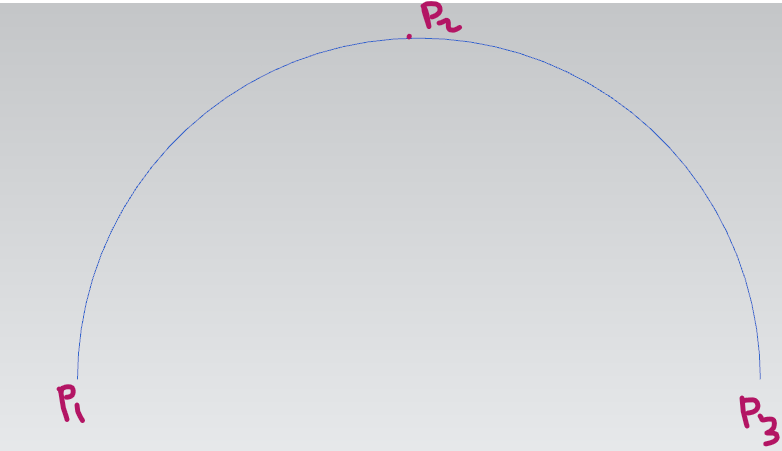

Arc
In geometry, an arc is a curved segment of a circle or any other curved line. It is a portion of the circumference of a
circle, and it is defined by two endpoints and all the points along the curve between these endpoints. Here are some key
concepts related to arcs:
Arc Length: The length of an arc is the distance along the curved line between its endpoints. The arc length is
typically measured in linear units (e.g., inches, centimeters) and depends on the radius of the circle and the angle
subtended by the arc.
Central Angle: The central angle is the angle formed by the two radii extending to the endpoints of the arc, with the
center of the circle as the vertex. The measure of the central angle determines the length of the arc.
Measure of an Arc: The measure of an arc is the central angle it subtends, and it is typically expressed in degrees. The
arc's length is directly proportional to the central angle.
Semicircle: A semicircle is an arc that is half of a complete circle. It is formed by a central angle of 180 degrees.
Major and Minor Arcs: If the central angle subtended by an arc is less than 180 degrees, it is called a minor arc. If
the central angle is greater than 180 degrees, the arc is called a major arc.
Chord: A chord is a straight line segment whose endpoints lie on the circle. An arc is the curve connecting the
endpoints of a chord.
Tangent and Secant: A tangent is a line that touches a circle at exactly one point, while a secant is a line that
intersects the circle at two points. Both can be associated with arcs in various ways.
Sector: A sector is the region enclosed by an arc and the two radii connecting the center to the arc's endpoints.
Arcs are used extensively in geometry and trigonometry, and they are fundamental to understanding circular motion,
angles, and various geometric constructions. They are also employed in areas such as architecture, engineering, and
computer-aided design (CAD).
The simplest functions for creating circular arcs can again be found in the NXOpen.CurveCollection class. There are
three functions, as follows:
1. Public Function CreateArc( startPoint As Point3d, pointOn As Point3d, endPoint As Point3d, alternateSolution As Boolean, ByRef flipped As Boolean)
2. Public Function CreateArc( center As Point3d, xDirection As Vector3d, yDirection As Vector3d, radius As Double, startAngle As Double, endAngle As Double)
3. Public Function CreateArc( center As Point3d, matrix As NXMatrix, radius As Double,startAngle As Double, endAngle As Double)
Example Code using Method:1
using NXOpen;
namespace Arc
{
public class Class1
{
public static void Main(string[] args)
{
Session theSession = Session.GetSession();
Part Workpart = theSession.Parts.Work;
Point3d startPoint = new Point3d(0, 0, 0); // p1
Point3d pointOn = new Point3d(10, 10, 0); // p2
Point3d endPoint = new Point3d(20, 0, 0); // p3
bool startEndgotFlipped;
NXOpen.Arc newArc = Workpart.Curves.CreateArc(startPoint, pointOn, endPoint, false, out startEndgotFlipped);
newArc.SetVisibility(SmartObject.VisibilityOption.Visible);
}
public static int GetUnloadOption(string args)
{
return (int)NXOpen.Session.LibraryUnloadOption.Immediately;
}
}
}
